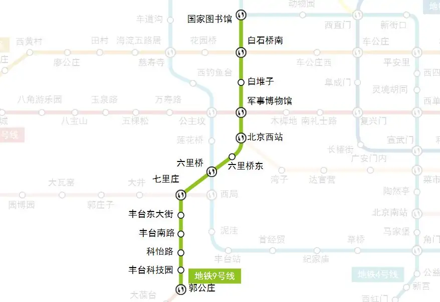
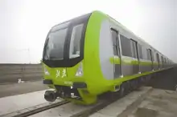

线路走向

车辆设施
DKZ33

北京地铁9号线使用中车长春轨道客车股份有限公司生产的DKZ33型电力动车组，属B型车6节编组，初期配属24列（车号：09 001-09 024），2011年底使用14列。该车辆的车头和车身贯有北京地铁9号线标志色——浅绿色彩带的装饰，除此之外列车整体外观，是不锈钢车体侧面以及客车内饰与2010年制造的DKZ31、DKZ32（分别用于北京地铁15号线和北京地铁亦庄线）相近。
北京地铁9号线所有列车安装有“黑匣子”，对车辆运行状态进行记录。车厢内安装了广播噪检装置，可根据车厢内背景声音的大小，自动调节广播音量 [3] 。该列车使用“全电制动停车技术”，可以吸收刹车过程中减少的动能并储存为电能，全年节约电能76万千瓦时，总节能比例达到10%左右。